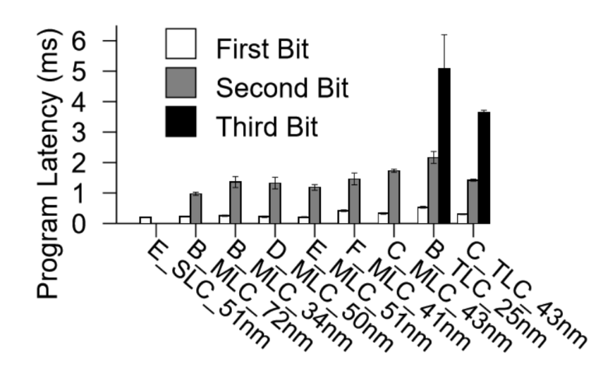

<!DOCTYPE html>
<html><head><title>07. Flash Memory</title><meta charSet="utf-8"/><meta name="viewport" content="width=device-width, initial-scale=1.0"/><meta property="og:title" content="07. Flash Memory"/><meta property="og:description" content="서울대학교 컴퓨터공학과 김진수 교수님의 &amp;quot;고급 운영체제&amp;quot; 강의를 필기한 내용입니다. 다소 잘못된 내용과 구어적 표현 이 포함되어 있을 수 있습니다. Flash Memory Basics § Floating-gate MOSFET § 원래 트랜지스터라는 것이 말이여 Source 에서 Drain 으로 전류가 흘러야 하는데 이것이 Gate 에 전압을 걸어줄 때만 흐른다 이거여 근데 이 트랜지스터의 gate 위에 Control Gate (CG) 놈을 하나 더 올려서 기존의 gate 를 중간에 샌드위치시켜버린 것이 Floating-gate MOSFET (FGMOS) 랜다."/><meta property="og:image" content="https://mdg.haeramk.im/static/og-image.png"/><meta property="og:width" content="1200"/><meta property="og:height" content="675"/><link rel="icon" href="../../static/icon.png"/><meta name="description" content="서울대학교 컴퓨터공학과 김진수 교수님의 &amp;quot;고급 운영체제&amp;quot; 강의를 필기한 내용입니다. 다소 잘못된 내용과 구어적 표현 이 포함되어 있을 수 있습니다. Flash Memory Basics § Floating-gate MOSFET § 원래 트랜지스터라는 것이 말이여 Source 에서 Drain 으로 전류가 흘러야 하는데 이것이 Gate 에 전압을 걸어줄 때만 흐른다 이거여 근데 이 트랜지스터의 gate 위에 Control Gate (CG) 놈을 하나 더 올려서 기존의 gate 를 중간에 샌드위치시켜버린 것이 Floating-gate MOSFET (FGMOS) 랜다."/><meta name="generator" content="Quartz"/><link rel="preconnect" href="https://fonts.googleapis.com"/><link rel="preconnect" href="https://fonts.gstatic.com"/><link href="../../index.css" rel="stylesheet" type="text/css" spa-preserve/><link href="https://cdn.jsdelivr.net/npm/katex@0.16.0/dist/katex.min.css" rel="stylesheet" type="text/css" spa-preserve/><link href="https://fonts.googleapis.com/css2?family=IBM Plex Mono&amp;family=Gowun Batang:wght@400;700&amp;family=Gowun Dodum:ital,wght@0,400;0,600;1,400;1,600&amp;display=swap" rel="stylesheet" type="text/css" spa-preserve/><script src="../../prescript.js" type="application/javascript" spa-preserve></script><script type="application/javascript" spa-preserve>const fetchData = fetch(`../../static/contentIndex.json`).then(data => data.json())</script></head><body data-slug="originals/aos.spring.2024.cse.snu.ac.kr/07.-Flash-Memory"><div id="quartz-root" class="page"><div id="quartz-body"><div class="left sidebar"><h1 class="page-title "><a href="../..">Madison Digital Garden</a></h1><div class="spacer mobile-only"></div><div class="search "><div id="search-icon"><p>Search</p><div></div><svg tabIndex="0" aria-labelledby="title desc" role="img" xmlns="http://www.w3.org/2000/svg" viewBox="0 0 19.9 19.7"><title id="title">Search</title><desc id="desc">Search</desc><g class="search-path" fill="none"><path stroke-linecap="square" d="M18.5 18.3l-5.4-5.4"></path><circle cx="8" cy="8" r="7"></circle></g></svg></div><div id="search-container"><div id="search-space"><input autocomplete="off" id="search-bar" name="search" type="text" aria-label="Search for something" placeholder="Search for something"/><div id="results-container"></div></div></div></div><div class="darkmode "><input class="toggle" id="darkmode-toggle" type="checkbox" tabIndex="-1"/><label id="toggle-label-light" for="darkmode-toggle" tabIndex="-1"><svg xmlns="http://www.w3.org/2000/svg" xmlnsXlink="http://www.w3.org/1999/xlink" version="1.1" id="dayIcon" x="0px" y="0px" viewBox="0 0 35 35" style="enable-background:new 0 0 35 35;" xmlSpace="preserve"><title>Light mode</title><path d="M6,17.5C6,16.672,5.328,16,4.5,16h-3C0.672,16,0,16.672,0,17.5    S0.672,19,1.5,19h3C5.328,19,6,18.328,6,17.5z M7.5,26c-0.414,0-0.789,0.168-1.061,0.439l-2,2C4.168,28.711,4,29.086,4,29.5    C4,30.328,4.671,31,5.5,31c0.414,0,0.789-0.168,1.06-0.44l2-2C8.832,28.289,9,27.914,9,27.5C9,26.672,8.329,26,7.5,26z M17.5,6    C18.329,6,19,5.328,19,4.5v-3C19,0.672,18.329,0,17.5,0S16,0.672,16,1.5v3C16,5.328,16.671,6,17.5,6z M27.5,9    c0.414,0,0.789-0.168,1.06-0.439l2-2C30.832,6.289,31,5.914,31,5.5C31,4.672,30.329,4,29.5,4c-0.414,0-0.789,0.168-1.061,0.44    l-2,2C26.168,6.711,26,7.086,26,7.5C26,8.328,26.671,9,27.5,9z M6.439,8.561C6.711,8.832,7.086,9,7.5,9C8.328,9,9,8.328,9,7.5    c0-0.414-0.168-0.789-0.439-1.061l-2-2C6.289,4.168,5.914,4,5.5,4C4.672,4,4,4.672,4,5.5c0,0.414,0.168,0.789,0.439,1.06    L6.439,8.561z M33.5,16h-3c-0.828,0-1.5,0.672-1.5,1.5s0.672,1.5,1.5,1.5h3c0.828,0,1.5-0.672,1.5-1.5S34.328,16,33.5,16z     M28.561,26.439C28.289,26.168,27.914,26,27.5,26c-0.828,0-1.5,0.672-1.5,1.5c0,0.414,0.168,0.789,0.439,1.06l2,2    C28.711,30.832,29.086,31,29.5,31c0.828,0,1.5-0.672,1.5-1.5c0-0.414-0.168-0.789-0.439-1.061L28.561,26.439z M17.5,29    c-0.829,0-1.5,0.672-1.5,1.5v3c0,0.828,0.671,1.5,1.5,1.5s1.5-0.672,1.5-1.5v-3C19,29.672,18.329,29,17.5,29z M17.5,7    C11.71,7,7,11.71,7,17.5S11.71,28,17.5,28S28,23.29,28,17.5S23.29,7,17.5,7z M17.5,25c-4.136,0-7.5-3.364-7.5-7.5    c0-4.136,3.364-7.5,7.5-7.5c4.136,0,7.5,3.364,7.5,7.5C25,21.636,21.636,25,17.5,25z"></path></svg></label><label id="toggle-label-dark" for="darkmode-toggle" tabIndex="-1"><svg xmlns="http://www.w3.org/2000/svg" xmlnsXlink="http://www.w3.org/1999/xlink" version="1.1" id="nightIcon" x="0px" y="0px" viewBox="0 0 100 100" style="enable-background='new 0 0 100 100'" xmlSpace="preserve"><title>Dark mode</title><path d="M96.76,66.458c-0.853-0.852-2.15-1.064-3.23-0.534c-6.063,2.991-12.858,4.571-19.655,4.571  C62.022,70.495,50.88,65.88,42.5,57.5C29.043,44.043,25.658,23.536,34.076,6.47c0.532-1.08,0.318-2.379-0.534-3.23  c-0.851-0.852-2.15-1.064-3.23-0.534c-4.918,2.427-9.375,5.619-13.246,9.491c-9.447,9.447-14.65,22.008-14.65,35.369  c0,13.36,5.203,25.921,14.65,35.368s22.008,14.65,35.368,14.65c13.361,0,25.921-5.203,35.369-14.65  c3.872-3.871,7.064-8.328,9.491-13.246C97.826,68.608,97.611,67.309,96.76,66.458z"></path></svg></label></div></div><div class="center"><div class="page-header"><div class="popover-hint"><h1 class="article-title ">07. Flash Memory</h1><p class="content-meta ">Mar 26, 2024, 15 min read</p><ul class="tags "><li><a href="../../tags/강의록" class="internal tag-link">#강의록</a></li><li><a href="../../tags/snu_cse_ms_aos24s" class="internal tag-link">#snu_cse_ms_aos24s</a></li></ul></div></div><article class="popover-hint"><blockquote class="callout" data-callout="info">
<div class="callout-title">
                  <div class="callout-icon"><svg xmlns="http://www.w3.org/2000/svg" width="100%" height="100%" viewBox="0 0 24 24" fill="none" stroke="currentColor" stroke-width="2" stroke-linecap="round" stroke-linejoin="round"><circle cx="12" cy="12" r="10"></circle><line x1="12" y1="16" x2="12" y2="12"></line><line x1="12" y1="8" x2="12.01" y2="8"></line></svg></div>
                  <div class="callout-title-inner"><p>서울대학교 컴퓨터공학과 김진수 교수님의 &quot;고급 운영체제&quot; 강의를 필기한 내용입니다. </p></div>
                  
                </div>
</blockquote>
<blockquote class="callout" data-callout="warning">
<div class="callout-title">
                  <div class="callout-icon"><svg xmlns="http://www.w3.org/2000/svg" width="100%" height="100%" viewBox="0 0 24 24" fill="none" stroke="currentColor" stroke-width="2" stroke-linecap="round" stroke-linejoin="round"><path d="m21.73 18-8-14a2 2 0 0 0-3.48 0l-8 14A2 2 0 0 0 4 21h16a2 2 0 0 0 1.73-3Z"></path><line x1="12" y1="9" x2="12" y2="13"></line><line x1="12" y1="17" x2="12.01" y2="17"></line></svg></div>
                  <div class="callout-title-inner"><p>다소 잘못된 내용과 구어적 표현 이 포함되어 있을 수 있습니다. </p></div>
                  
                </div>
</blockquote>
<h2 id="flash-memory-basics">Flash Memory Basics<a aria-hidden="true" tabindex="-1" href="#flash-memory-basics" class="internal"> §</a></h2>
<h3 id="floating-gate-mosfet">Floating-gate MOSFET<a aria-hidden="true" tabindex="-1" href="#floating-gate-mosfet" class="internal"> §</a></h3>
<ul>
<li>원래 트랜지스터라는 것이 말이여
<ul>
<li><em>Source</em> 에서 <em>Drain</em> 으로 전류가 흘러야 하는데 이것이</li>
<li><em>Gate</em> 에 전압을 걸어줄 때만 흐른다 이거여</li>
</ul>
</li>
</ul>
<p></p>
<ul>
<li>근데 이 트랜지스터의 gate 위에 <em>Control Gate</em> (<em>CG</em>) 놈을 하나 더 올려서 기존의 gate 를 중간에 샌드위치시켜버린 것이 Floating-gate MOSFET (FGMOS) 랜다.
<ul>
<li>이 샌드위치 gate 를 <em>Floating Gate</em> (<em>FG</em>) 라고 한다.</li>
</ul>
</li>
<li>이놈의 특징은
<ul>
<li>Source, Drain (사진에서는 Bit) 과 CG 어떻게 잘 전압을 걸어주면 이 FG 에 전자가 갇히게 되고,</li>
<li>전자가 갇혀있을 때에는 더 CG 높은 전압을 걸어줘야 Source 와 Drain 사이에 전류가 흐르게 된다.</li>
</ul>
</li>
<li>그럼 이 특징에 대해 좀 더 자세히 알아보며 실제로 데이터를 어떻게 저장하는지 알아보자.</li>
</ul>
<h3 id="그리고-그것을-활용한-nand-flash-memory">그리고 그것을 활용한 NAND flash memory<a aria-hidden="true" tabindex="-1" href="#그리고-그것을-활용한-nand-flash-memory" class="internal"> §</a></h3>
<h4 id="programming-write">Programming (Write)<a aria-hidden="true" tabindex="-1" href="#programming-write" class="internal"> §</a></h4>
<ul>
<li>이 FG에 전자를 채움으로써 데이터를 저장하게 된다.
<ul>
<li>채워져 있는 것이 <code>0</code>, 비워져 있는 것이 <code>1</code>.</li>
<li>왜 비워져 있는 것이 <code>1</code>이지? 라고 생각할 수 있는데, 아래에서 설명하는 것처럼 전류가 흐르느냐의 유무로 <code>0</code> 과 <code>1</code>을 판단하기 때문이다.</li>
<li>즉, sensing 을 하면 비워져 있는 경우에 전류가 흐르므로 <code>1</code>이 되는 것.</li>
</ul>
</li>
<li>CG 에 적당한 전압을 걸어주고 Source 와 Drain 에도 전압을 걸어주면 전류가 흐른다고 했자나?</li>
<li>근데 이때 Source 와 Drain 에 전압차를 크게 걸어주게 되면 전류가 이 FG 전자가 으로 튀어올라 갇히게 된다.</li>
<li>이렇게 전자를 가둬서 cell 의 상태를 <code>0</code> 으로 만들게 된다.</li>
</ul>
<h4 id="sensing-read">Sensing (Read)<a aria-hidden="true" tabindex="-1" href="#sensing-read" class="internal"> §</a></h4>
<ul>
<li>일단 Source 와 Drain 에 적당한 전압차를 걸어주고</li>
<li>비어있을 때와 전자가 채워져 있을 때의 Vth 중간 값을 CG 에 걸어주게 되면 비어있는 cell 은 전류가 흐를 것이고 채워져 있는 cell 은 전류가 흐르지 않을 것이여.</li>
<li>그럼 이 전류가 흐르냐 안흐르냐를 sensing 하면 해당 cell 에 저장되어 있는 값을 읽을 수 있게 된다.</li>
</ul>
<h4 id="erasing">Erasing<a aria-hidden="true" tabindex="-1" href="#erasing" class="internal"> §</a></h4>
<ul>
<li>Erase 한다는 것은 cell 을 다시 <code>1</code> 로 바꾸는 것을 말한다.</li>
<li>이때는 CG 와 Source 간의 전압차를 크게 걸어주면 뭔 Fowler-Nordheim tunneling 이라는 현상 때문에 FG 에 있던 전자가 방출된다고 한다.</li>
<li>이 원리로 다시 <code>1</code> 로 바꾸게 되는 것.</li>
</ul>
<h3 id="page-block">Page, Block<a aria-hidden="true" tabindex="-1" href="#page-block" class="internal"> §</a></h3>
<ul>
<li>page 단위 r/w, block 단위 erase - 알고계시죠?
<ul>
<li>처음에는 page 를 disk sector 사이즈로 맞춰 512byte 였지만 요즘은 4k 등으로 한댄다</li>
<li>그리고 요즘은 block 안에 page 를 수백개를 넣어서 block 은 Mb 단위라고 한다</li>
</ul>
</li>
<li>page 에는 spare area 를 둬서 ECC 혹은 metadata 를 저장한다고 하더라</li>
<li>Plane: block 들이 수직으로 배치되고, 맨 아래 register 가 있어서 여기에 있던 내용이 block 의 page 로 program 되거나 그 반대로 sensing 된다.
<ul>
<li>이 단위를 plane 이라고 하는 것.</li>
<li>요즘은 이 plane 도 여러개 둬서 한번에 여러개의 page 가 r/w 된다고 한다</li>
</ul>
</li>
<li>그리고 뭐 Plane 이 모여 Die 가 되고</li>
<li>Die 도 모여 chip 이 된다</li>
<li>뭐 SLC, MLC, TLC, QLC 뭔지 다 아시죠?
<ul>
<li>다만 sensing Vth 를 한개 둬서 SLC 되고 두개 둬서 MLC 되고 이렇게 된다는 것</li>
<li>그리고 전에 창민형이 말한 것처럼 sensing Vth 들 간의 간격이 시간이 갈수록 점점 좁아지기 때문에 QLC 로 갈수록 수명이 짧아진다.</li>
</ul>
</li>
<li>3D NAND (V-NAND)
<ul>
<li>이전에는 NAND 들을 평면상에 직렬로 연결시켰는데</li>
<li>이 기술은 이 평면을 수직으로 세워서 층을 가지게 되었음</li>
<li>삼성에서 처음으로 만들었다고 한다</li>
</ul>
</li>
</ul>
<h2 id="garbage-collection">Garbage Collection<a aria-hidden="true" tabindex="-1" href="#garbage-collection" class="internal"> §</a></h2>
<ul>
<li>Erase-before-write: “가장 아름다운 글씨를 쓰기 위해서는 우선 가장 깨끗한 종이가 필요하다.”
<ul>
<li>Cell 의 상태가 <code>1</code> 이어야 <code>0</code> 으로 write 할 수 있기 때문에, overwrite (in-place update) 가 안되고, 우선 먼저 erase를 해야 한다.</li>
</ul>
</li>
<li>근데 이 erase 는 block 단위로 수행되기에, 우선 block 내의 valid data 를 딴 곳으로 옮겨야 하는데, 이것을 <em>Garbase Collection</em> (<em>GC</em>) 라고 하더라..</li>
<li>이 GC 는 항상 문제가 된다; 기존에 있던 valid data 를 옮겨야 하기 때문에
<ul>
<li>이 오버헤드때문에 성능하락이 있고</li>
<li>Flash 의 수명 (뒤에서 설명할 P/E cycle limit) 도 짧아 진다.</li>
</ul>
</li>
</ul>
<blockquote class="callout" data-callout="info">
<div class="callout-title">
                  <div class="callout-icon"><svg xmlns="http://www.w3.org/2000/svg" width="100%" height="100%" viewBox="0 0 24 24" fill="none" stroke="currentColor" stroke-width="2" stroke-linecap="round" stroke-linejoin="round"><circle cx="12" cy="12" r="10"></circle><line x1="12" y1="16" x2="12" y2="12"></line><line x1="12" y1="8" x2="12.01" y2="8"></line></svg></div>
                  <div class="callout-title-inner"><p>여기부터는 <code>2024-03-28</code> 강의</p></div>
                  
                </div>
</blockquote>
<h2 id="pecycle-wear-leveling-hotcold-separation">PECycle, Wear Leveling, Hot/Cold separation<a aria-hidden="true" tabindex="-1" href="#pecycle-wear-leveling-hotcold-separation" class="internal"> §</a></h2>
<ul>
<li>일단 데이터는 hot/cold 가 존재한다 (hot: 자주 변경되는 데이터, cold: 그렇지 않은 것)
<ul>
<li>Hot data 는 fs 의 metadata, dbms 의 table 등</li>
<li>Cold data 는 image, video 등</li>
</ul>
</li>
<li>Flash NAND 는 program 과 erase 를 무한정 할 수 있는 것이 아니고, 수명이 존재한다.
<ul>
<li>이것을 <em>Program/Erase Cycle</em> (<em>P/E Cycle</em>) 이라 한다,, 아시죠?</li>
</ul>
</li>
<li>이 P/ECycle 을 고르게 분배하기 위해 (즉, 일부만 수명이 다하는 것을 방지하기 위해) <em>Wear leveling</em> 이라는 것을 한다.
<ul>
<li>P/ECycle 이 높은 block (old) 에는 cold 를 넣어서 속도를 늦추고</li>
<li>낮은 block (young) 에는 hot 을 넣어서 old 와 P/ECycle 수준을 비슷하게 맞춤</li>
<li>그리고 이렇게 냅두게 되면 나중에는 young 이 old 가 되고 old 가 young 으로 바뀌게 되니까 (상대적으로) 그때 다시 swap 을 해서 pecycle 이 골고루 차게끔</li>
<li>또한 어떤 블럭은 선천적으로 수명이 약한게 있어서 이런것도 Wear leveling 에 고려한다더라.</li>
</ul>
</li>
</ul>
<h2 id="rw-latency">RW Latency<a aria-hidden="true" tabindex="-1" href="#rw-latency" class="internal"> §</a></h2>
<ul>
<li>HW 적인 측면에서 보자면 read 보다 write 가 더 느리다.</li>
<li>보통 DRAM 으로 이것을 해결한다.</li>
<li>SSD 에서 DRAM 에만 들어가면 write 가 완료됐다고 보고, DRAM 에 있는 데이터를 background 로 실제로 write 하는 것
<ul>
<li>DRAM 에 있다가 전원이 나가서 데이터가 손실되는 것은 어쩔 수 없다</li>
<li>그래서 완전히 저장되는 것을 보장받고 싶으면 commit? flush? 같은 별도의 명령어를 사용해라</li>
</ul>
</li>
<li>따라서 host level 에서 속도 측정을 해보면 write 가 더 속도가 잘나온다
<ul>
<li>Read 는 flash -> DRAM -> host 순서지만</li>
<li>Write 는 host -> DRAM 까지만 이기 때문</li>
</ul>
</li>
</ul>
<h2 id="mlc-programming">MLC Programming<a aria-hidden="true" tabindex="-1" href="#mlc-programming" class="internal"> §</a></h2>
<p></p>
<ul>
<li>MLC 부터는 셀 하나에 여러개의 비트가 저장되는데</li>
<li>이 저장된 비트들이 하나의 page 에 들어간다고 생각하기 쉽지만 실제로는 그렇지 않다.</li>
<li>MLC 기준으로, 2개의 page 각각의 한 bit (따라서 도합 2bit) 가 하나의 cell 에 들어가는 것.
<ul>
<li>즉, 하나의 cell line (<em>Word</em>) 에는 MLC 기준 2개의 page 가 저장된다.</li>
<li>Cell 의 bit 는 가로방향이 아니라 세로방향이다 라고 비유할 수 있는 것.</li>
</ul>
</li>
<li>대강 이런식으로 단계적으로 program 한다고 한다.
<ul>
<li>Cell 하나의 두 bit 중 왼쪽을 <em>Least Significant Bit</em> (<em>LSB</em>), 오른쪽을 <em>Most Significant Bit</em> (<em>MSB</em>) 라고 할 때
<ul>
<li>물론 MSB, LSB 정의가 오른쪽 왼쪽은 아니겠지만 일단 넘어가부러</li>
</ul>
</li>
<li>첫 단계에서는 LSB 를 program 한다: 0 을 program 할 경우 <span class="math math-inline"><span class="katex"><span class="katex-html" aria-hidden="true"><span class="base"><span class="strut" style="height:0.8333em;vertical-align:-0.15em;"></span><span class="mord"><span class="mord mathnormal" style="margin-right:0.22222em;">V</span><span class="msupsub"><span class="vlist-t vlist-t2"><span class="vlist-r"><span class="vlist" style="height:0.3361em;"><span style="top:-2.55em;margin-left:-0.2222em;margin-right:0.05em;"><span class="pstrut" style="height:2.7em;"></span><span class="sizing reset-size6 size3 mtight"><span class="mord mtight"><span class="mord mathnormal mtight">t</span><span class="mord mathnormal mtight">h</span></span></span></span></span><span class="vlist-s">​</span></span><span class="vlist-r"><span class="vlist" style="height:0.15em;"><span></span></span></span></span></span></span></span></span></span></span> 가 <span class="math math-inline"><span class="katex"><span class="katex-html" aria-hidden="true"><span class="base"><span class="strut" style="height:0.8333em;vertical-align:-0.15em;"></span><span class="mord mathnormal" style="margin-right:0.22222em;">V</span><span class="mord"><span class="mord mathnormal" style="margin-right:0.00773em;">R</span><span class="msupsub"><span class="vlist-t vlist-t2"><span class="vlist-r"><span class="vlist" style="height:0.3011em;"><span style="top:-2.55em;margin-left:-0.0077em;margin-right:0.05em;"><span class="pstrut" style="height:2.7em;"></span><span class="sizing reset-size6 size3 mtight"><span class="mord mtight"><span class="mord mtight">1</span></span></span></span></span><span class="vlist-s">​</span></span><span class="vlist-r"><span class="vlist" style="height:0.15em;"><span></span></span></span></span></span></span></span></span></span></span> 를 넘어가도록 전자를 채움.</li>
<li>두번째에서는 MSB 를 program 한다: 현재의 <span class="math math-inline"><span class="katex"><span class="katex-html" aria-hidden="true"><span class="base"><span class="strut" style="height:0.8333em;vertical-align:-0.15em;"></span><span class="mord"><span class="mord mathnormal" style="margin-right:0.22222em;">V</span><span class="msupsub"><span class="vlist-t vlist-t2"><span class="vlist-r"><span class="vlist" style="height:0.3361em;"><span style="top:-2.55em;margin-left:-0.2222em;margin-right:0.05em;"><span class="pstrut" style="height:2.7em;"></span><span class="sizing reset-size6 size3 mtight"><span class="mord mtight"><span class="mord mathnormal mtight">t</span><span class="mord mathnormal mtight">h</span></span></span></span></span><span class="vlist-s">​</span></span><span class="vlist-r"><span class="vlist" style="height:0.15em;"><span></span></span></span></span></span></span></span></span></span></span> 에서 쬐끔만 전자를 채워 미세 조정을 한다.
<ul>
<li>만약 LSB 가 1 이고 MSB 에 0 을 program 하고 싶다면, <span class="math math-inline"><span class="katex"><span class="katex-html" aria-hidden="true"><span class="base"><span class="strut" style="height:0.8333em;vertical-align:-0.15em;"></span><span class="mord"><span class="mord mathnormal" style="margin-right:0.22222em;">V</span><span class="msupsub"><span class="vlist-t vlist-t2"><span class="vlist-r"><span class="vlist" style="height:0.3361em;"><span style="top:-2.55em;margin-left:-0.2222em;margin-right:0.05em;"><span class="pstrut" style="height:2.7em;"></span><span class="sizing reset-size6 size3 mtight"><span class="mord mtight"><span class="mord mathnormal mtight">t</span><span class="mord mathnormal mtight">h</span></span></span></span></span><span class="vlist-s">​</span></span><span class="vlist-r"><span class="vlist" style="height:0.15em;"><span></span></span></span></span></span></span></span></span></span></span> 를 <span class="math math-inline"><span class="katex"><span class="katex-html" aria-hidden="true"><span class="base"><span class="strut" style="height:0.8333em;vertical-align:-0.15em;"></span><span class="mord mathnormal" style="margin-right:0.22222em;">V</span><span class="mord"><span class="mord mathnormal" style="margin-right:0.00773em;">R</span><span class="msupsub"><span class="vlist-t vlist-t2"><span class="vlist-r"><span class="vlist" style="height:0.3011em;"><span style="top:-2.55em;margin-left:-0.0077em;margin-right:0.05em;"><span class="pstrut" style="height:2.7em;"></span><span class="sizing reset-size6 size3 mtight"><span class="mord mtight"><span class="mord mtight">2</span></span></span></span></span><span class="vlist-s">​</span></span><span class="vlist-r"><span class="vlist" style="height:0.15em;"><span></span></span></span></span></span></span></span></span></span></span> 는 넘어가도록 하되 <span class="math math-inline"><span class="katex"><span class="katex-html" aria-hidden="true"><span class="base"><span class="strut" style="height:0.8333em;vertical-align:-0.15em;"></span><span class="mord mathnormal" style="margin-right:0.22222em;">V</span><span class="mord"><span class="mord mathnormal" style="margin-right:0.00773em;">R</span><span class="msupsub"><span class="vlist-t vlist-t2"><span class="vlist-r"><span class="vlist" style="height:0.3011em;"><span style="top:-2.55em;margin-left:-0.0077em;margin-right:0.05em;"><span class="pstrut" style="height:2.7em;"></span><span class="sizing reset-size6 size3 mtight"><span class="mord mtight"><span class="mord mtight">3</span></span></span></span></span><span class="vlist-s">​</span></span><span class="vlist-r"><span class="vlist" style="height:0.15em;"><span></span></span></span></span></span></span></span></span></span></span> 은 안넘어가게 쬐끔만 채우고</li>
<li>LSB 가 0 이고 MSB 에 0 을 program 하고 싶다면, <span class="math math-inline"><span class="katex"><span class="katex-html" aria-hidden="true"><span class="base"><span class="strut" style="height:0.8333em;vertical-align:-0.15em;"></span><span class="mord"><span class="mord mathnormal" style="margin-right:0.22222em;">V</span><span class="msupsub"><span class="vlist-t vlist-t2"><span class="vlist-r"><span class="vlist" style="height:0.3361em;"><span style="top:-2.55em;margin-left:-0.2222em;margin-right:0.05em;"><span class="pstrut" style="height:2.7em;"></span><span class="sizing reset-size6 size3 mtight"><span class="mord mtight"><span class="mord mathnormal mtight">t</span><span class="mord mathnormal mtight">h</span></span></span></span></span><span class="vlist-s">​</span></span><span class="vlist-r"><span class="vlist" style="height:0.15em;"><span></span></span></span></span></span></span></span></span></span></span> 가 <span class="math math-inline"><span class="katex"><span class="katex-html" aria-hidden="true"><span class="base"><span class="strut" style="height:0.8333em;vertical-align:-0.15em;"></span><span class="mord mathnormal" style="margin-right:0.22222em;">V</span><span class="mord"><span class="mord mathnormal" style="margin-right:0.00773em;">R</span><span class="msupsub"><span class="vlist-t vlist-t2"><span class="vlist-r"><span class="vlist" style="height:0.3011em;"><span style="top:-2.55em;margin-left:-0.0077em;margin-right:0.05em;"><span class="pstrut" style="height:2.7em;"></span><span class="sizing reset-size6 size3 mtight"><span class="mord mtight"><span class="mord mtight">3</span></span></span></span></span><span class="vlist-s">​</span></span><span class="vlist-r"><span class="vlist" style="height:0.15em;"><span></span></span></span></span></span></span></span></span></span></span> (즉, 이전에 LSB program 할때는 <span class="math math-inline"><span class="katex"><span class="katex-html" aria-hidden="true"><span class="base"><span class="strut" style="height:0.8333em;vertical-align:-0.15em;"></span><span class="mord mathnormal" style="margin-right:0.22222em;">V</span><span class="mord"><span class="mord mathnormal" style="margin-right:0.00773em;">R</span><span class="msupsub"><span class="vlist-t vlist-t2"><span class="vlist-r"><span class="vlist" style="height:0.3011em;"><span style="top:-2.55em;margin-left:-0.0077em;margin-right:0.05em;"><span class="pstrut" style="height:2.7em;"></span><span class="sizing reset-size6 size3 mtight"><span class="mord mtight"><span class="mord mtight">1</span></span></span></span></span><span class="vlist-s">​</span></span><span class="vlist-r"><span class="vlist" style="height:0.15em;"><span></span></span></span></span></span></span></span></span></span></span> 이었던) 에서 <span class="math math-inline"><span class="katex"><span class="katex-html" aria-hidden="true"><span class="base"><span class="strut" style="height:0.8333em;vertical-align:-0.15em;"></span><span class="mord mathnormal" style="margin-right:0.22222em;">V</span><span class="mord"><span class="mord mathnormal" style="margin-right:0.00773em;">R</span><span class="msupsub"><span class="vlist-t vlist-t2"><span class="vlist-r"><span class="vlist" style="height:0.3011em;"><span style="top:-2.55em;margin-left:-0.0077em;margin-right:0.05em;"><span class="pstrut" style="height:2.7em;"></span><span class="sizing reset-size6 size3 mtight"><span class="mord mtight"><span class="mord mtight">4</span></span></span></span></span><span class="vlist-s">​</span></span><span class="vlist-r"><span class="vlist" style="height:0.15em;"><span></span></span></span></span></span></span></span></span></span></span> 로 움직이도록 쬐끔만 채우는 식</li>
</ul>
</li>
</ul>
</li>
</ul>
<p></p>
<ul>
<li>따라서 첫번째 페이지를 쓸 때에보다 두번째 페이지를 쓸 때 <span class="math math-inline"><span class="katex"><span class="katex-html" aria-hidden="true"><span class="base"><span class="strut" style="height:0.8333em;vertical-align:-0.15em;"></span><span class="mord"><span class="mord mathnormal" style="margin-right:0.22222em;">V</span><span class="msupsub"><span class="vlist-t vlist-t2"><span class="vlist-r"><span class="vlist" style="height:0.3361em;"><span style="top:-2.55em;margin-left:-0.2222em;margin-right:0.05em;"><span class="pstrut" style="height:2.7em;"></span><span class="sizing reset-size6 size3 mtight"><span class="mord mtight"><span class="mord mathnormal mtight">t</span><span class="mord mathnormal mtight">h</span></span></span></span></span><span class="vlist-s">​</span></span><span class="vlist-r"><span class="vlist" style="height:0.15em;"><span></span></span></span></span></span></span></span></span></span></span> 를 미세조정해야 하기 때문에 조금 더 오래걸린다고 한다.
<ul>
<li>위 그래프 보면 오잉진짜네 소리가 나옴</li>
<li>TLC 에서는 이것에 대한 방안으로 page 3개를 DRAM 에 모았다가 (3bit/cell) 이것이 정해지면 그때 한번에 program 을 하면서 한번에 Vth 를 옮기는 <em>one-shot programming</em> 기법을 사용하기도 한다고 한다.</li>
</ul>
</li>
</ul>
<h2 id="ecc">ECC<a aria-hidden="true" tabindex="-1" href="#ecc" class="internal"> §</a></h2>
<blockquote class="callout" data-callout="warning">
<div class="callout-title">
                  <div class="callout-icon"><svg xmlns="http://www.w3.org/2000/svg" width="100%" height="100%" viewBox="0 0 24 24" fill="none" stroke="currentColor" stroke-width="2" stroke-linecap="round" stroke-linejoin="round"><path d="m21.73 18-8-14a2 2 0 0 0-3.48 0l-8 14A2 2 0 0 0 4 21h16a2 2 0 0 0 1.73-3Z"></path><line x1="12" y1="9" x2="12" y2="13"></line><line x1="12" y1="17" x2="12.01" y2="17"></line></svg></div>
                  <div class="callout-title-inner"><p>#draft Record <code>28'</code></p></div>
                  
                </div>
</blockquote>
<p></p>
<ul>
<li>bit 가 깨질 것이 당연하다고 생각, ECC 가 spare area 에 들어간다.</li>
<li>Data area 를 512byte 단위로 쪼갠 다음, (8개) 이것 각각에 대한 ECC 를 spare area 에 넣어놓은다</li>
<li>위 그림 보면 이해 된다; ECC 코드 크기 정보도 아래 그림 보고 참고하자</li>
</ul>
<h2 id="concerns-on-flash-nand">Concerns on Flash NAND<a aria-hidden="true" tabindex="-1" href="#concerns-on-flash-nand" class="internal"> §</a></h2>
<h3 id="reliability">Reliability<a aria-hidden="true" tabindex="-1" href="#reliability" class="internal"> §</a></h3>
<ul>
<li><em>Write disturbance</em>; write 하기 위해서는 에 높은 전압을 걸기 떄문에 아무리 해당 word 에만 전류를 걸어준다 하더라도 주변 cell 들이 영향을 받는다</li>
<li><em>Read disturbance</em> 의 경우에도 비슷하다; 맨 아래에서 sensing 을 하기 위해 모두 전압을 걸어 전류가 흐르는지 봐야 하고, 이 과정에서 다른 cell 들이 영향을 받는다</li>
<li><em>Retension error</em>: 전자를 넣어서 write 를 했을 때, 아무짓도 안하고 그냥 냅둬도 전자들이 슬슬 도망치면서 데이터가 깨지는 경우가 있더라
<ul>
<li>이것을 방지하기 위해서는</li>
<li>구매한지 얼마 안돼서 floating gate 가 튼튼한 SSD 를 사용하거나</li>
<li>사용하지 않더라도 power 를 넣어둔 상태로 유지 (background job 을 돌아가게 해서 이러한 retension error 를 방지하는 것)</li>
</ul>
</li>
<li><em>Bad block</em>
<ul>
<li>반도체 제조 공정부터 100% 에러가 없을 수는 없다.</li>
<li>그래서 문제 가 있는 block 을 bad block 이라 하고, 얘네들은 마킹해 뒀다가 firmware 에서 제외시킨다.</li>
<li>제조단계 (선천적) 에서가 아닌, 사용중 (후천적) 으로 이런 Bad block 이 날 수도 있다고 한다 (<em>Runtime Bad-block</em>)</li>
</ul>
</li>
</ul>
<h3 id="page-programming-constraints">Page programming constraints<a aria-hidden="true" tabindex="-1" href="#page-programming-constraints" class="internal"> §</a></h3>
<ul>
<li><em>Number of Partial-page</em> (<em>NOP</em>)
<ul>
<li>page 의 일부만 사용하고 일부는 사용하지 않은 경우 남은 일부분을 사용하자</li>
<li>종류 (SLC, MLC, TLC) 에 따라 저 “일부” 가 정해진다고 하는데</li>
<li>근데 page 가 깨질 염려가 있어 이제 이 방법은 사용하지 못하도록 제한했다고 한다.</li>
</ul>
</li>
<li><em>Sequential page program</em>
<ul>
<li>Page 는 block 내에서 순서대로 program 되어야 한다.</li>
<li>즉, block 내 중간중간에 program 하지는 못한다는 소리.</li>
</ul>
</li>
<li><em>SLC Mode</em>
<ul>
<li>LSB 만 사용하도록 해서 MLC 를 SLC 처럼 쓰기도 한다고 한다.</li>
<li>중요한 데이터 보관용</li>
</ul>
</li>
</ul>
<h3 id="proscons-for-nand-flash">Pros/cons for NAND flash<a aria-hidden="true" tabindex="-1" href="#proscons-for-nand-flash" class="internal"> §</a></h3>
<ul>
<li>장점은
<ul>
<li>작고 빠르고 저렴하고 전력소모도 적고</li>
</ul>
</li>
<li>단점은
<ul>
<li>뭐 overwrite 가 안되거나 erase 단위가 program 단위보다 더 큰 등의 특징들에서 오는 오버헤드들</li>
<li>예를 들면 <a href="../../botanicals/storage/terms/Write-Amplification,-WA-and-Write-Amplication-Factor,-WAF-(Storage)" class="internal" data-slug="botanicals/storage/terms/Write-Amplification,-WA-and-Write-Amplication-Factor,-WAF-(Storage)">WAF</a> 같은거</li>
</ul>
</li>
<li>Flash 의 단점들을 커버하기 위해 firmware/FTL 이 필요하고 이것은 성능에 아주 중요한 영향을 미친다.</li>
</ul></article></div><div class="right sidebar"><div class="graph "><h3>Graph View</h3><div class="graph-outer"><div id="graph-container" data-cfg="{&quot;drag&quot;:true,&quot;zoom&quot;:true,&quot;depth&quot;:1,&quot;scale&quot;:1.1,&quot;repelForce&quot;:0.5,&quot;centerForce&quot;:0.3,&quot;linkDistance&quot;:30,&quot;fontSize&quot;:0.6,&quot;opacityScale&quot;:1,&quot;showTags&quot;:true,&quot;removeTags&quot;:[]}"></div><svg version="1.1" id="global-graph-icon" xmlns="http://www.w3.org/2000/svg" xmlnsXlink="http://www.w3.org/1999/xlink" x="0px" y="0px" viewBox="0 0 55 55" fill="currentColor" xmlSpace="preserve"><path d="M49,0c-3.309,0-6,2.691-6,6c0,1.035,0.263,2.009,0.726,2.86l-9.829,9.829C32.542,17.634,30.846,17,29,17
	s-3.542,0.634-4.898,1.688l-7.669-7.669C16.785,10.424,17,9.74,17,9c0-2.206-1.794-4-4-4S9,6.794,9,9s1.794,4,4,4
	c0.74,0,1.424-0.215,2.019-0.567l7.669,7.669C21.634,21.458,21,23.154,21,25s0.634,3.542,1.688,4.897L10.024,42.562
	C8.958,41.595,7.549,41,6,41c-3.309,0-6,2.691-6,6s2.691,6,6,6s6-2.691,6-6c0-1.035-0.263-2.009-0.726-2.86l12.829-12.829
	c1.106,0.86,2.44,1.436,3.898,1.619v10.16c-2.833,0.478-5,2.942-5,5.91c0,3.309,2.691,6,6,6s6-2.691,6-6c0-2.967-2.167-5.431-5-5.91
	v-10.16c1.458-0.183,2.792-0.759,3.898-1.619l7.669,7.669C41.215,39.576,41,40.26,41,41c0,2.206,1.794,4,4,4s4-1.794,4-4
	s-1.794-4-4-4c-0.74,0-1.424,0.215-2.019,0.567l-7.669-7.669C36.366,28.542,37,26.846,37,25s-0.634-3.542-1.688-4.897l9.665-9.665
	C46.042,11.405,47.451,12,49,12c3.309,0,6-2.691,6-6S52.309,0,49,0z M11,9c0-1.103,0.897-2,2-2s2,0.897,2,2s-0.897,2-2,2
	S11,10.103,11,9z M6,51c-2.206,0-4-1.794-4-4s1.794-4,4-4s4,1.794,4,4S8.206,51,6,51z M33,49c0,2.206-1.794,4-4,4s-4-1.794-4-4
	s1.794-4,4-4S33,46.794,33,49z M29,31c-3.309,0-6-2.691-6-6s2.691-6,6-6s6,2.691,6,6S32.309,31,29,31z M47,41c0,1.103-0.897,2-2,2
	s-2-0.897-2-2s0.897-2,2-2S47,39.897,47,41z M49,10c-2.206,0-4-1.794-4-4s1.794-4,4-4s4,1.794,4,4S51.206,10,49,10z"></path></svg></div><div id="global-graph-outer"><div id="global-graph-container" data-cfg="{&quot;drag&quot;:true,&quot;zoom&quot;:true,&quot;depth&quot;:-1,&quot;scale&quot;:0.9,&quot;repelForce&quot;:0.5,&quot;centerForce&quot;:0.3,&quot;linkDistance&quot;:30,&quot;fontSize&quot;:0.6,&quot;opacityScale&quot;:1,&quot;showTags&quot;:true,&quot;removeTags&quot;:[]}"></div></div></div><div class="toc desktop-only"><button type="button" id="toc"><h3>Table of Contents</h3><svg xmlns="http://www.w3.org/2000/svg" width="24" height="24" viewBox="0 0 24 24" fill="none" stroke="currentColor" stroke-width="2" stroke-linecap="round" stroke-linejoin="round" class="fold"><polyline points="6 9 12 15 18 9"></polyline></svg></button><div id="toc-content"><ul class="overflow"><li class="depth-0"><a href="#flash-memory-basics" data-for="flash-memory-basics">Flash Memory Basics</a></li><li class="depth-1"><a href="#floating-gate-mosfet" data-for="floating-gate-mosfet">Floating-gate MOSFET</a></li><li class="depth-1"><a href="#그리고-그것을-활용한-nand-flash-memory" data-for="그리고-그것을-활용한-nand-flash-memory">그리고 그것을 활용한 NAND flash memory</a></li><li class="depth-1"><a href="#page-block" data-for="page-block">Page, Block</a></li><li class="depth-0"><a href="#garbage-collection" data-for="garbage-collection">Garbage Collection</a></li><li class="depth-0"><a href="#pecycle-wear-leveling-hotcold-separation" data-for="pecycle-wear-leveling-hotcold-separation">PECycle, Wear Leveling, Hot/Cold separation</a></li><li class="depth-0"><a href="#rw-latency" data-for="rw-latency">RW Latency</a></li><li class="depth-0"><a href="#mlc-programming" data-for="mlc-programming">MLC Programming</a></li><li class="depth-0"><a href="#ecc" data-for="ecc">ECC</a></li><li class="depth-0"><a href="#concerns-on-flash-nand" data-for="concerns-on-flash-nand">Concerns on Flash NAND</a></li><li class="depth-1"><a href="#reliability" data-for="reliability">Reliability</a></li><li class="depth-1"><a href="#page-programming-constraints" data-for="page-programming-constraints">Page programming constraints</a></li><li class="depth-1"><a href="#proscons-for-nand-flash" data-for="proscons-for-nand-flash">Pros/cons for NAND flash</a></li></ul></div></div><div class="backlinks "><h3>Backlinks</h3><ul class="overflow"><li><a href="../../originals/aos.spring.2024.cse.snu.ac.kr/(서울대)-고급-운영체제-강의록" class="internal">(서울대) 고급 운영체제 강의록</a></li></ul></div></div></div><footer class><hr/><p>Created with <a href="https://quartz.jzhao.xyz/">Quartz v4.1.0</a>, © 2024</p><ul><li><a href="https://github.com/haeramkeem">GitHub</a></li><li><a href="www.linkedin.com/in/haeram-kim-277404220">LinkedIn</a></li><li><a href="mailto:haeram.kim1@gmail.com">Email</a></li></ul></footer></div></body><script type="application/javascript">// quartz/components/scripts/quartz/components/scripts/callout.inline.ts
function toggleCallout() {
  const outerBlock = this.parentElement;
  outerBlock.classList.toggle(`is-collapsed`);
  const collapsed = outerBlock.classList.contains(`is-collapsed`);
  const height = collapsed ? this.scrollHeight : outerBlock.scrollHeight;
  outerBlock.style.maxHeight = height + `px`;
  let current = outerBlock;
  let parent = outerBlock.parentElement;
  while (parent) {
    if (!parent.classList.contains(`callout`)) {
      return;
    }
    const collapsed2 = parent.classList.contains(`is-collapsed`);
    const height2 = collapsed2 ? parent.scrollHeight : parent.scrollHeight + current.scrollHeight;
    parent.style.maxHeight = height2 + `px`;
    current = parent;
    parent = parent.parentElement;
  }
}
function setupCallout() {
  const collapsible = document.getElementsByClassName(
    `callout is-collapsible`
  );
  for (const div of collapsible) {
    const title = div.firstElementChild;
    if (title) {
      title.removeEventListener(`click`, toggleCallout);
      title.addEventListener(`click`, toggleCallout);
      const collapsed = div.classList.contains(`is-collapsed`);
      const height = collapsed ? title.scrollHeight : div.scrollHeight;
      div.style.maxHeight = height + `px`;
    }
  }
}
document.addEventListener(`nav`, setupCallout);
window.addEventListener(`resize`, setupCallout);
</script><script type="module">
          import mermaid from 'https://cdn.jsdelivr.net/npm/mermaid/dist/mermaid.esm.min.mjs';
          const darkMode = document.documentElement.getAttribute('saved-theme') === 'dark'
          mermaid.initialize({
            startOnLoad: false,
            securityLevel: 'loose',
            theme: darkMode ? 'dark' : 'default'
          });
          document.addEventListener('nav', async () => {
            await mermaid.run({
              querySelector: '.mermaid'
            })
          });
          </script><script src="https://cdn.jsdelivr.net/npm/katex@0.16.7/dist/contrib/copy-tex.min.js" type="application/javascript"></script><script src="https://www.googletagmanager.com/gtag/js?id=G-N68CCP1QHG" type="application/javascript"></script><script src="../../postscript.js" type="module"></script></html>